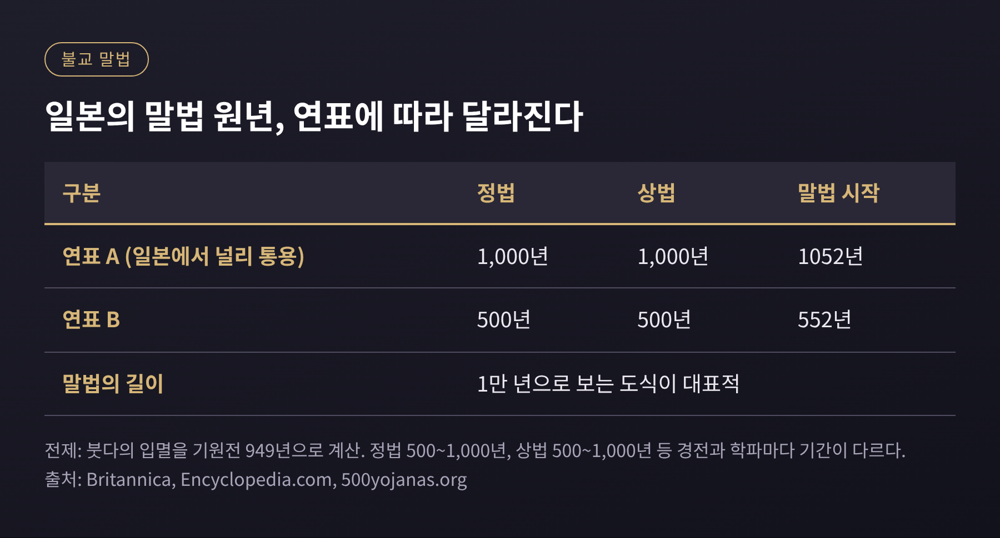
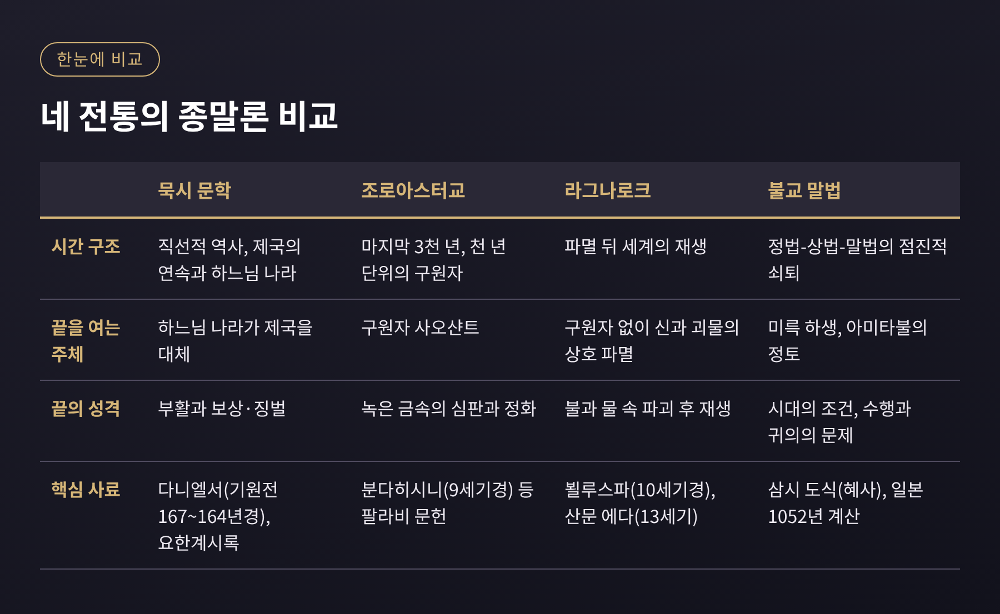

종말론 비교종교학은 여러 종교와 신화가 '세상의 끝'을 어떻게 상상했는지 나란히 놓고 읽는 공부입니다.
이번 글에서는 유대-기독교 계통의 묵시 문학, 조로아스터교, 북유럽의 라그나로크, 불교의 말법 사상을 차례로 살펴봅니다.
어느 믿음이 옳은지를 가리는 글은 아닙니다. 종말 이야기가 어떤 구조로 짜여 있고, 왜 비슷하거나 달라 보이는지를 정리해 보겠습니다.
핵심만 먼저 말씀드리면 이렇습니다. 네 전통 모두 끝을 이야기하지만, 끝은 대개 '마지막'이 아니라 '다시 시작하기 위한 문턱'으로 그려집니다. 다만 그 문턱을 지키는 것이 구원자인지, 운명인지, 시간 자체인지는 전통마다 다릅니다.
종말론(eschatology)은 '마지막 일들에 대한 이야기'를 뜻합니다.
흔히 종말이라고 하면 파국을 떠올리지만, 학계의 쓰임새는 조금 다릅니다.
묵시(apocalypse)라는 말은 고대 그리스어 apokálupsis에서 왔고, 뜻은 '계시', 곧 '덮개를 걷어 드러냄'입니다.
대중에게는 재앙의 동의어가 되었으나, 학자들은 감추어진 것을 드러내는 사건 자체를 가리키는 말로 씁니다.
묵시 문학에는 공통된 틀이 있습니다.
천사나 초자연적 존재가 사람에게 꿈이나 환상으로 우주의 비밀과 역사의 흐름을 일러 줍니다.
상징적 이미지와 숫자를 즐겨 쓰고, 역사를 몇 개의 시기로 나눕니다.
그리고 거의 모두 먼 옛날의 위인 이름을 빌려 쓴 가명 저작입니다.
성서학자 존 콜린스는 이를 "서사 틀을 지닌 계시 문학의 한 장르"로 정의했습니다.
이 틀을 기억해 두시면 이어지는 세 전통과 비교하기가 한결 쉽습니다.
묵시 문학의 대표작으로 다니엘서가 꼽힙니다.
전통적으로는 기원전 6세기의 다니엘이 쓴 책으로 전해졌지만, 학계 다수는 기원전 약 167~163년에 쓰였다고 봅니다.
특히 10~12장은 기원전 167~164년 사이로 추정됩니다.
배경은 셀레우코스 왕조의 안티오코스 4세 시대입니다.
기원전 167년 12월 15일, 그가 예루살렘 성전에 '멸망의 가증한 것'을 세웠다는 기록이 있습니다. 아마도 그리스식 제단이었을 것으로 봅니다.
율법서는 금지되었고, 마카베오 항쟁이 뒤따랐습니다.
다니엘서는 이 위기를 네 제국의 연속으로 해석합니다.
2장에는 금, 은, 청동, 철과 진흙으로 된 신상이 나오고, 7장에는 바다에서 올라오는 네 마리 짐승이 나옵니다.
현대 학계는 이를 바빌론, 메디아, 페르시아, 그리스로 읽는 경우가 많고, 전통적 해석은 마지막 제국을 로마로 봅니다.
읽는 방식에 따라 입장이 갈리는 대목입니다.
주목할 점은 12장입니다.
성서에서 죽은 자의 부활과 보상·징벌을 가장 분명하게 말한 최초의 대목으로 평가받습니다.
고난받는 공동체에게 '정의는 결국 이루어진다'고 말해 주는 문학이었던 셈입니다.
신약의 요한계시록도 같은 장르에 속합니다.
다만 이 책은 저자를 가명 뒤에 숨기지 않고 '요한'이라고 밝힌 예외입니다. '짐승의 수'처럼 숫자를 상징으로 쓰는 방식은 장르의 전형을 따릅니다.
묵시 문학의 뿌리를 둘러싸고 학계에서는 오래된 논쟁이 있습니다.
선악의 이원적 구분과 '이 세상 대 오는 세상'이라는 발상을 조로아스터교에서 찾는 학자들이 있습니다.
반대로 외세 지배 아래 겪은 고난 같은 유대 사회 내부의 경험으로 충분히 설명된다고 보는 학자들도 있습니다.
어느 쪽도 결론이 난 것은 아니므로, 조로아스터교의 종말론을 먼저 보고 판단을 미뤄 두기로 하겠습니다.
조로아스터교에서 세상의 끝은 프라쇼케레티(Frashokereti), 곧 '최후의 쇄신'이라 불립니다.
'눈부시게 만든다'는 뜻으로 옮겨지며, 쇄신된 세상에는 굶주림도, 목마름도, 죽음도 없다고 그려집니다.
이 쇄신을 이끄는 구원자가 사오샨트(Saoshyant)이고, 이름은 '이로움을 가져오는 자'라는 뜻입니다.
중세(9~12세기) 문헌에 따르면 구원자는 한 명이 아닙니다.
세상의 마지막 3천 년 동안 천 년이 끝날 때마다 한 명씩, 모두 세 명이 온다고 합니다.
앞의 두 사람이 우셰다르와 우셰다르마흐이고, 셋째가 사오샨트입니다.
팔라비어 문헌에서는 조로아스터의 씨가 호수에 보존되어 있다가 처녀를 통해 이들이 태어난다고 전합니다.
종말 직전의 풍경도 인상적입니다.
해와 달이 어두워지고, 사람들은 종교와 가족과 어른에 대한 존경을 잃으며, 세상은 겨울에 빠집니다.
괴물 아지 다하카가 사슬에서 풀려나 세상을 괴롭힌다고도 합니다.
그 끝에서 사오샨트는 죽은 이들을 일으킵니다.
이후 모든 사람이 녹은 금속의 강을 건너는데, 의로운 이에게는 '따뜻한 우유' 같고 악한 이에게는 고통이라는 서술이 있습니다.
『이란 백과사전(Encyclopaedia Iranica)』은 이 시련이 악인을 정화한다는 후대 해석을 전하고, 지옥도 함께 정화된다고 정리합니다.
한 가지 짚어 둘 점이 있습니다.
이 상세한 그림은 9세기경의 분다히시니 같은 팔라비 문헌에 실려 있습니다.
고대 가타와 아베스타에는 종말론이 흩어진 암시로만 나옵니다.
그래서 유대 묵시 문학과의 선후 관계를 단정하기 어렵고, 학계도 신중한 편입니다.
악의 운명에 관해서도 해석이 갈립니다.
악이 완전히 사라진다는 서술이 있는가 하면, 소멸이 아니라 무력화라는 설명도 있고, 아흐리만의 최종 운명은 문헌상 분명하지 않다는 지적도 있습니다.
북유럽 신화의 종말은 라그나로크(Ragnarök)입니다.
이름은 보통 '신들의 최종 운명'으로 풀이합니다. 흔히 아는 '신들의 황혼'은 민간어원일 가능성이 크고, 1876년 바그너의 악극 덕에 널리 퍼졌습니다.
주요 사료는 둘입니다.
13세기에 편찬된 『시 에다』의 「뵐루스파」, 그리고 13세기 스노리 스투를루손의 『산문 에다』입니다.
「뵐루스파」에서 라그나로크는 대략 40연에서 58연에 걸쳐 나옵니다.
시의 화자는 오딘 앞에 선 무녀(völva)이고, 시 자체는 10세기, 곧 아이슬란드가 기독교를 받아들이기 전의 작품으로 추정됩니다.
전개는 이렇습니다.
먼저 3년의 전쟁이 이어지고, 여름이 없는 겨울이 세 번 연달아 옵니다. 이를 핀불베트르(Fimbulwinter)라 부릅니다. 형제가 서로를 죽이는 시기입니다.
늑대 펜리르가 해를, 그의 형제 하티가 달을 삼키고 별은 사라지며 산이 무너집니다.
헤임달이 걀라르호른을 불면 이그드라실이 떨고, 수르트가 불을 들고 무스펠헤임에서 나옵니다.
전장은 비그리드 평원입니다. 사방이 백 리그에 이른다고 합니다.
오딘은 펜리르에게 삼켜지고, 아들 비다르가 늑대의 턱을 찢어 복수합니다.
토르는 요르문간드를 쓰러뜨리지만 그 독 때문에 아홉 걸음을 걷고 쓰러집니다.
프레이르는 수르트에게 패합니다. 수르트가 세상을 불태우면 대지는 바다로 가라앉습니다.
그러나 이야기는 여기서 끝나지 않습니다.
대지는 초록빛으로 바다에서 다시 솟고, 씨를 뿌리지 않아도 곡식이 자랍니다.
살아남은 신들은 이다발 들판에 모여 옛 황금 말판을 찾아냅니다.
인간 리프와 리프트라시르는 호드미미르의 숲에 숨어 아침 이슬을 먹으며 살아남아 인류를 다시 이어 갑니다.
라그나로크의 독특함은 구원자가 없다는 점입니다.
신들조차 죽습니다. 승리가 아닌 상호 파멸이 서술의 중심에 있습니다.
학계의 쟁점도 있습니다.
「뵐루스파」 65연의 '위에서 오는 강력한 자'는 기독교적 첨가라는 견해가 많고, 요한계시록의 구도와 닮았다는 지적도 있습니다.
고스포스 십자가(920~950년경)처럼 이교와 기독교의 도상이 한 유물에 섞인 예도 이를 뒷받침한다고 봅니다.
헨리 벨로즈는 1936년에 시인이 기독교를 알고 섞었다고 주장했지만, 모든 연구자가 이에 동의하는 것은 아닙니다.
토착 전승과 외래 영향의 비율은 지금도 열려 있는 문제입니다.
불교의 종말은 앞의 셋과 결이 다릅니다.
한순간의 대파국이 아니라 붓다의 가르침이 서서히 흐려지는 긴 쇠퇴로 그려집니다.
이를 정법(正法), 상법(像法), 말법(末法)의 세 시기로 나눕니다.
정법에서는 가르침, 수행, 깨달음이 모두 살아 있습니다.
상법에서는 가르침과 수행은 있으나 깨달음이 드뭅니다.
말법에 이르면 "가르침만 남고 수행은 이루어지지 않으며 깨달음은 말뿐"이라고 설명됩니다.
기간은 문헌마다 다릅니다.
정법과 상법을 각각 500년 또는 1,000년으로 보고, 말법은 1만 년으로 보는 도식이 대표적입니다.
경전별로는 700년, 1,000년, 1,500년 등으로 갈립니다.
중국에서 삼시 도식을 처음 내놓은 이는 남악 혜사(515~577)로 알려져 있습니다.
북위와 북주의 폐불, 인도 방면으로의 에프탈 침입 같은 현실의 위기가 말법 의식을 키웠다고 설명합니다.
일본에서는 숫자가 구체적으로 확정됩니다.
붓다의 입멸을 기원전 949년으로 보고 정법과 상법을 각 1,000년으로 계산하면 말법은 1052년에 시작합니다.
브리태니커, 『Encyclopedia.com』, 500yojanas.org가 같은 날짜를 전합니다.
같은 계산에서 각 500년으로 잡으면 552년이 되므로, 연표가 하나로 합의된 것은 아니었습니다.
1052년이라는 해는 헤이안 후기 귀족들에게 시한부 달력처럼 느껴졌을 법합니다.
이후 전란과 재해가 이어진 12~13세기 일본에서 말법은 현실감 있는 언어가 되었습니다.
가마쿠라 시대(1185~1333)에는 이 문제에 대한 답으로 새로운 흐름이 쏟아졌습니다.
같은 위기 인식에서 출발해 정반대 처방이 나왔다는 사실이 흥미롭습니다.
또 희망의 자리에는 미래불 미륵과 아미타불의 정토가 놓입니다.
구원자가 직접 세상을 정화하기보다, 쇠퇴의 시대를 건너는 방법이 강조된다는 점이 특징입니다.

이제 비교해 볼 수 있습니다.
시간의 모양부터 다릅니다.
묵시 문학과 조로아스터교는 시작과 끝이 있는 직선에 가깝습니다. 역사가 정해진 단계를 거쳐 결판에 이릅니다.
라그나로크는 파멸 뒤에 세계가 다시 솟는 순환의 색채가 짙습니다.
불교의 말법은 쇠퇴의 곡선 위에 놓여 있고, 그 너머에 미륵이 기다립니다.
끝을 해결하는 주체도 다릅니다.
조로아스터교에는 사오샨트라는 구원자가 있습니다.
다니엘서에서는 하느님의 나라가 제국들을 대체합니다.
라그나로크에서는 구원자 없이 신들이 운명과 맞서고, 불교에서는 가르침의 쇠퇴 속에서 개인의 수행과 귀의가 길이 됩니다.
시련의 성격도 비교해 볼 만합니다.
조로아스터교의 녹은 금속은 심판이자 정화입니다.
라그나로크의 불은 파괴이면서 재생의 바탕입니다.
다니엘서의 부활은 보상과 징벌의 문제입니다.
말법은 시험이라기보다 시대의 조건에 가깝습니다.

학술적으로는 이런 유사성을 어떻게 설명할지가 논점입니다.
전파와 영향으로 보는 견해가 있고, 위기를 겪은 공동체가 비슷한 이야기를 각자 만들어 냈다고 보는 견해가 있습니다.
조로아스터교와 유대 묵시의 관계, 기독교와 라그나로크의 관계가 대표적으로 의견이 갈리는 지점입니다.
사료의 시기가 서로 엇갈린다는 점도 신중함이 필요한 이유입니다.
정리하면 이렇습니다.
종말 이야기는 대체로 세상이 어떻게 끝나는지보다, 지금의 고통을 어떻게 이해할 것인지에 답하는 이야기였습니다.
다니엘서는 박해의 한복판에서, 말법 사상은 전란과 재해의 시대에, 라그나로크는 전승이 기록으로 옮겨지던 전환기에 힘을 얻었습니다.
2026년 10월 오늘 우리가 이 이야기들을 읽는 일은 믿음을 고르는 일이 아니라, 사람들이 끝을 상상하며 무엇을 붙들어 왔는지 살피는 일에 가깝다고 생각합니다.
끝을 그린 이야기들이 대부분 새로운 시작으로 문을 열어 둔 까닭을 묻는다면, 저는 그 상상이 절망을 견디는 방식이었기 때문이라고 답하겠습니다.